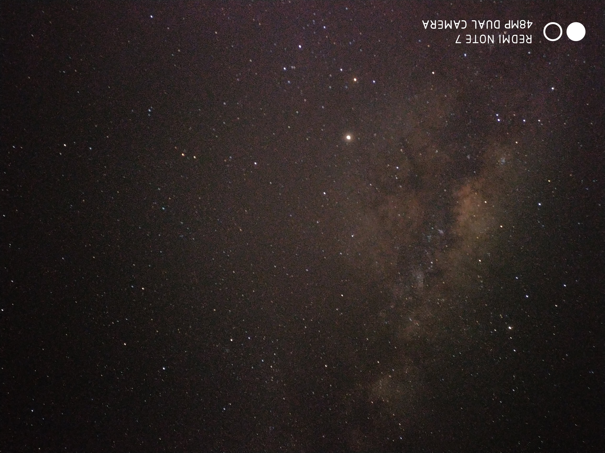

Saya akan menjelaskan beberapa teknik fotografi menggunakan handphone
Milky Way
MilkyWay atau yang biasa disebut Galaksi Bimasakti merupakan salah satu objek yang sering menjadi favorit para fotografer. Dikarenakan tingkat kesulitannya tinggi namun hasilnya sangat memuaskan. Kita dapat memotret galaksi bimasakti baik menggunakan Kamera DSLR, Maupun Handphone.
Oleh karena itu kita akan mempelajari cara memotret Milky Way pada handphone
Alat dan Bahan
- Handphone
- Tripod
- ND Filter
Langkah Langkah
- Siapkan Alat dan Bahan Tadi
- Pergilah ke lokasi yang minim cahaya, seperti di pedesaan, pegunungan, bukit, dan lokasi yang dipastikan minim polusi cahaya agar hasil lebih maksimal
- Letakkan Tripod pada bidang yang datar
- Pasang Handphone pada tripod
- Arahkan posisi kamera handphone menghadap ke langit
- Pada Handphone, buka mode manual atau pro
- Dalam mode pro tersebut. Silahkan setting ISO 800-3200, Shutter Speed 8-32 Second, Focus 100
- Jangan lupa set timer agar saat menekan tombol shutter handphone tidak goyang
- Letakkan ND Filter tepat pada depan lensa kamera
- Jika sudah siap semuanya, Tekan tombol shutter dan tunggulah hingga proses pengambilan gambar selesai
- Selama proses pengambilan gambar, usahakan device tidak bergerak sedikitpun agar hasil foto tidak blur
- Tara... anda telah bisa memotret Milky Way
Long Exposure

Long Exposure adalah teknik fotografi yang melibatkan penggunaan kecepatan rana durasi lama untuk secara tajam menangkap elemen diam gambar sambil memburamkan, mencoreng, atau mengaburkan elemen bergerak. Sebagai contoh fotografi Long Exposure adalah Star Trail
Bagaimana cara memotret Long Exposure pada Handphone?
Alat dan Bahan
- Handphone
- Tripod
- ND Filter
Langkah Langkah
- Siapkan Alat dan Bahan Tadi
- Pergilah ke lokasi yang minim cahaya, jika ingin memotret Line Jalan silahkan ke JPO
- Letakkan Tripod pada bidang yang datar
- Pasang Handphone pada tripod
- Arahkan posisi kamera handphone menghadap ke langit
- Pada Handphone, buka mode manual atau pro
- Dalam mode pro tersebut. Silahkan setting ISO 200-800, Shutter Speed 2-15 Second
- Jangan lupa set timer agar saat menekan tombol shutter handphone tidak goyang
- Letakkan ND Filter tepat pada depan lensa kamera
- Jika sudah siap semuanya, Tekan tombol shutter dan tunggulah hingga proses pengambilan gambar selesai
- Selama proses pengambilan gambar, usahakan device tidak bergerak sedikitpun agar hasil foto tidak blur
- Tara... anda telah bisa memotret Long Exposure